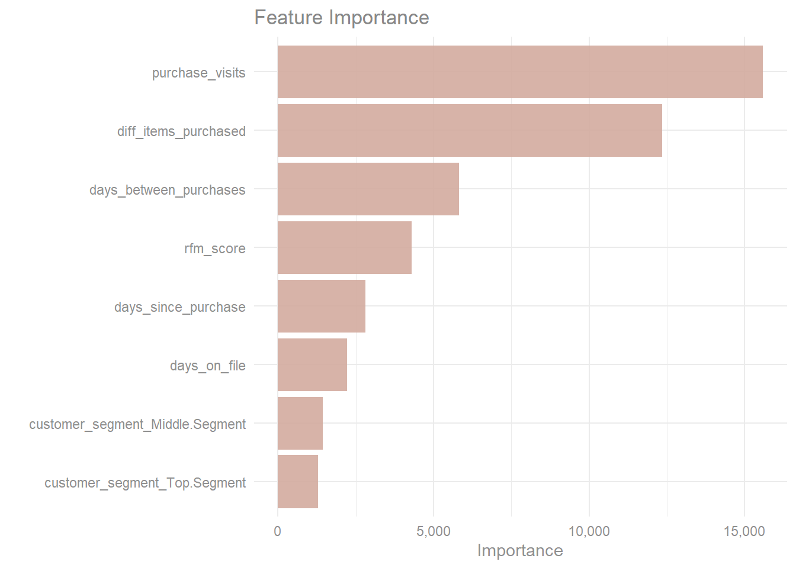

library(tidymodels)
library(vip)Web Sales Prediction
Libraries
Feature Engineering
Feature Scaling will be performed in order to transform numerical attributes to be on similar scales.
Since most Machine Learning algorithms prefer to work with numbers, we will convert the customer segment categories from text to numbers.
m_res <- recipe(sales_per_visit ~ ., data = train) |>
step_normalize(all_numeric_predictors()) |>
step_dummy(all_nominal_predictors())
m_resRecipe
Inputs:
role #variables
outcome 1
predictor 7
Operations:
Centering and scaling for all_numeric_predictors()
Dummy variables from all_nominal_predictors()Model
Three model will be trained and evaluated to see which of them will have the best potential at generalizing well on the test set this models are linear regression, decision tree and a random forest model.
lr_mdl <- linear_reg() |>
set_engine("lm")
dt_mdl <- decision_tree() |>
set_engine("rpart") |>
set_mode("regression")
rf_mdl <- rand_forest() |>
set_engine("ranger") |>
set_mode("regression")Workflow
Creating a workflow pipeline which combines both feature engineering and the model specification together. this will be done for each model.
lr_wf <- workflow() |>
add_recipe(m_res) |>
add_model(lr_mdl)
dt_wf <- workflow() |>
add_recipe(m_res) |>
add_model(dt_mdl)
rf_wf <- workflow() |>
add_recipe(m_res) |>
add_model(rf_mdl)Cross Validation
In order to better evaluate the model performance the training set will be divided further into smaller training set and a validation set, the models will then be trained against the smaller training set and evaluate them against the validation set. Note that there will be 10 separate folds (train set & validation set) and split will be done using a stratified sampling based on the newly created customer segment variable so that each set will have a random sample close to that of the population (the entire train set)
set.seed(1122)
v_folds <- vfold_cv(train, v = 10, strata = "customer_segment")Linear Regression
doParallel::registerDoParallel()
lr_fit <- lr_wf |>
fit_resamples(resamples = v_folds,
metrics = metric_set(rmse, rsq, mae),
control = control_resamples(save_pred = TRUE, verbose = FALSE))
collect_metrics(lr_fit) |> cross_valid_tibble(model = "default")Decision Tree
dt_fit <- dt_wf |>
fit_resamples(resamples = v_folds,
metrics = metric_set(rmse, rsq, mae),
control = control_resamples(save_pred = TRUE, verbose = FALSE))
collect_metrics(dt_fit) |> cross_valid_tibble(model = "default")Random Forest
rf_fit <- rf_wf |>
fit_resamples(resamples = v_folds,
metrics = metric_set(rmse, rsq, mae),
control = control_resamples(save_pred = TRUE, verbose = FALSE))
collect_metrics(rf_fit) |> cross_valid_tibble(model = "default")Evaluating the performance of the three models we can see that the random forest model made the least error when predicting sales per visit with RMSE of 46.0 and MAE of 22.2 way better than decision tree with RMSE of 58.1 and MAE of 34.8 linear regression performed worst of all three models.
hyper-parameter tuning
The model performance can be improved further by feeding the best parameter to the model. A grid search will be used to save time and reduce errors.
Creating a new tunable model for both decision tree and random forest model.
Decision Tree
Experimenting on three decision tree hyperparameters which are::
cost complexity :- the cost parameter (cp) used by CART model.
tree depth :- The maximum depth of the decision tree.
min n :- The minimum number of data points required for a node to be split further.
dt_t_mdl <- decision_tree(cost_complexity = tune(),
tree_depth = tune(),
min_n = tune()) |>
set_engine("rpart") |>
set_mode("regression")
# Update workflow model
dt_wf <- update_model(dt_wf, dt_t_mdl)
set.seed(1221)
doParallel::registerDoParallel()
dt_tune <- tune_grid(dt_wf,
resamples = v_folds,
grid = 10,
metrics = metric_set(mae))collect_metrics(dt_tune) |> cross_valid_tibble("dt")show_best(dt_tune, metric = "mae") |> cross_valid_tibble("dt")autoplot(dt_tune) + theme_minimal()
Based on the average MAE of all 10 split there is an increase in the model performance of which there is a reduction in the prediction error from 33.4 down to 20.1. let’s see how the random forest model performs.
Random Forest
Experimenting on two random forest hyperparameters which are::
mtry :- Number of predictors that will be randomly sampled at each split when creating the tree model.
min_n :- The minimum number of data points required for a node to be split further.
rf_t_mdl <- rand_forest(mtry = tune(),
trees = 1000,
min_n = tune()) |>
set_engine("ranger") |>
set_mode("regression")
# Update workflow model
rf_wf <- update_model(rf_wf, rf_t_mdl)
set.seed(1221)
doParallel::registerDoParallel()
rf_tune <- tune_grid(rf_wf,
resamples = v_folds,
grid = 5,
metrics = metric_set(mae))i Creating pre-processing data to finalize unknown parameter: mtrycollect_metrics(rf_tune) |> cross_valid_tibble("rf")show_best(rf_tune, metric = "mae") |> cross_valid_tibble("rf")autoplot(rf_tune) + theme_minimal()The tunned random forest model have the best performance so far, with the lowest error of 20.4 on an average for all 10 split.
Feature Importance
imp_spec <- rf_mdl |>
finalize_model(select_best(rf_tune, metric = "mae")) |>
set_engine("ranger", importance = "permutation")
workflow() |>
add_recipe(m_res) |>
add_model(imp_spec) |>
fit(train) |>
extract_fit_parsnip() |>
vip(aesthetics = list(alpha = 0.9, fill = "#D3AB9E")) +
ggtitle("Feature Importance") +
scale_y_continuous(labels = scales::label_comma()) +
theme_minimal() +
theme(plot.title = element_text(color = "#888888"),
axis.title.x = element_text(color = "#8F8F8F"),
axis.text = element_text(color = "#8F8F8F"))
The number of visit from customers which involved a least a purchase is the most important variable when predicting sales per visit which is closely followed by the number of unique items purchased while the dummy variables for customer segment have the smallest contribution when predicting sales per visit.
Finalize workflow
Going forward the random forest will be used to predict sales per visit on the test set to see how well the model generalizes.
Load Testing data
test <- readr::read_delim("data/clothing_store_PCA_test", delim = ",") |>
clean_add_variable()final_rf <- rf_wf |>
finalize_workflow(select_best(rf_tune, metric = "mae"))Fit & Predict
# Clean and add variables to the test set
test <- clean_add_variable(test)
fit_workflow <- fit(final_rf, train)
sales_prediction <- predict(fit_workflow, test)
pred_df <- sales_prediction |>
mutate(actual = test$sales_per_visit)Evaluation
mae(pred_df, truth = actual, estimate = .pred) |>
reactable(
theme = reactableTheme(color = "#919191",
headerStyle = list(color = "#858585")),
columns = list(.estimate = colDef(format = colFormat(digits = 3))),
bordered = TRUE
)numeric_summary(pred_df, .pred, FALSE) |>
mutate(variable = "Prediction") |>
bind_rows(numeric_summary(pred_df, actual, FALSE) |> mutate(variable = "Actual")) |>
relocate(variable, .before = 1) |>
mutate(across(where(is.numeric), ~round(.x, 2))) |>
rename_with(axis_label) |>
reactable(
theme = reactableTheme(color = "#919191",
headerStyle = list(color = "#858585")),
defaultColDef = colDef(format = colFormat(separators = TRUE,
prefix = "$")),
columns = list(
Variable = colDef(style = list(color = "#777777",
fontWeight = "bold"),
format = colFormat(prefix = NULL))
)
)pred_df |>
ggplot(aes(actual, .pred)) +
geom_abline(lty = 2, color = "#D3AB9E") +
geom_point(color = "#D3AB9E") +
scale_x_continuous(labels = scales::label_dollar()) +
scale_y_continuous(labels = scales::label_dollar()) +
theme_minimal() +
labs(x = "Actual", y = "Prediction",
title = "Actual Vs Predicted Sales Per Visit") +
theme(axis.title = element_text(color = "#5E5E5E"),
plot.title = element_text(color = "#5E5E5E"))Prediction on the test set have a Mean Absolute Error of 20.5 which mean the final random forest model is not over fitting the data. Also from the scatter plot above there is a certain pattern of error for the actual and predicted sales per visit which shows smaller errors for sales below $300 and a higher error for sales above that amount. Another obvious error the model made is failing to predict sales per visit above $716.9.
Save Final Model
mdl_v <- vetiver::vetiver_model(model = fit_workflow,
model_name = "sales_random_forest")
model_board <- pins::board_folder(path = "model_workflow", versioned = TRUE)
vetiver::vetiver_pin_write(model_board, mdl_v)Function for future prediction of sales per visit.
#' Predict Sales per visit on new set of records.
#'
#' @param board_path path to the saved pin board.
#' @param mdl_version The model version.
#' @param new_data A new data set to predict.
#'
#' @return A tibble with a single variable ".pred" which holds the new predictions of sales per visit.
#' @export
#'
#' @examples predict_sale_per_visit("~/sales_prediction/board", new_web_records)
#'
predict_sale_per_visit <- function(board_path, mdl_version, new_data) {
model_board <- pins::board_folder(path = board_path)
vers <- if (!missing(mdl_version)) mdl_version else NULL
wf_model <- vetiver::vetiver_pin_read(board = model_board,
name = "sales_random_forest",
version = vers)
library(workflows)
predict(wf_model, new_data)
}